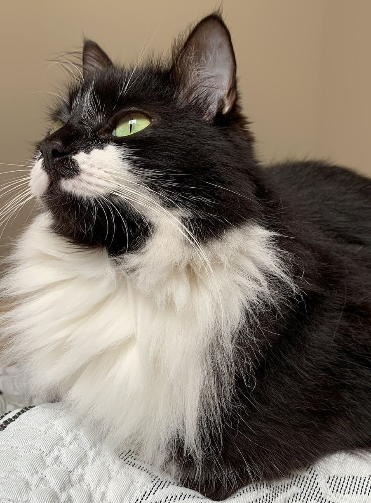
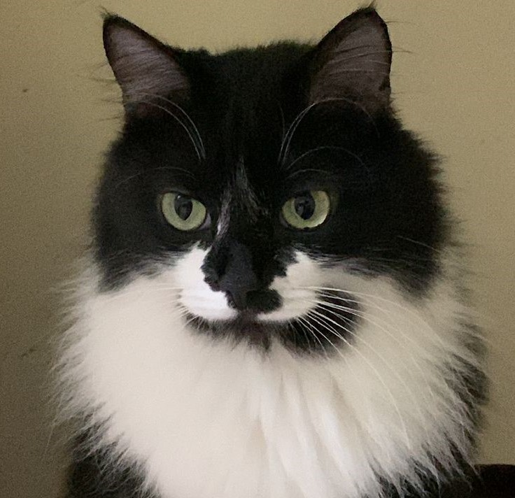
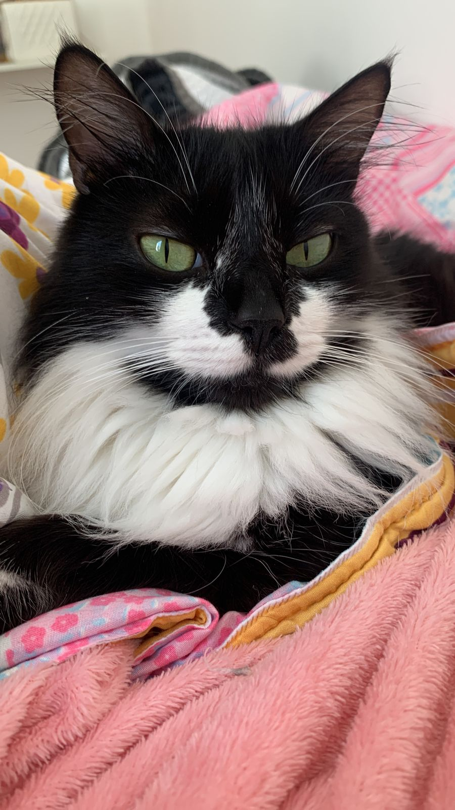

Madie
☰
Atividades
  
Imagens do autor
Sobre mim:
Sou uma gatinha
frajola
muito doce e amigável.
Idade:
3 anos.
Saúde:
castrada, não vacinada.
Gostos:
carinho na cabeça, mamar o próprio rabinho.
Aversões:
carinho na barriga.
Hobbies:
brincar, passear, comer bastante.
Fico mal humorada quando:
estou com fome.